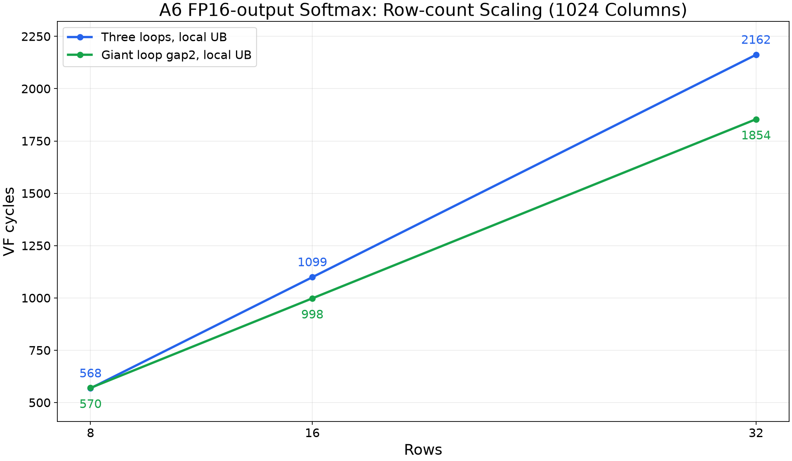
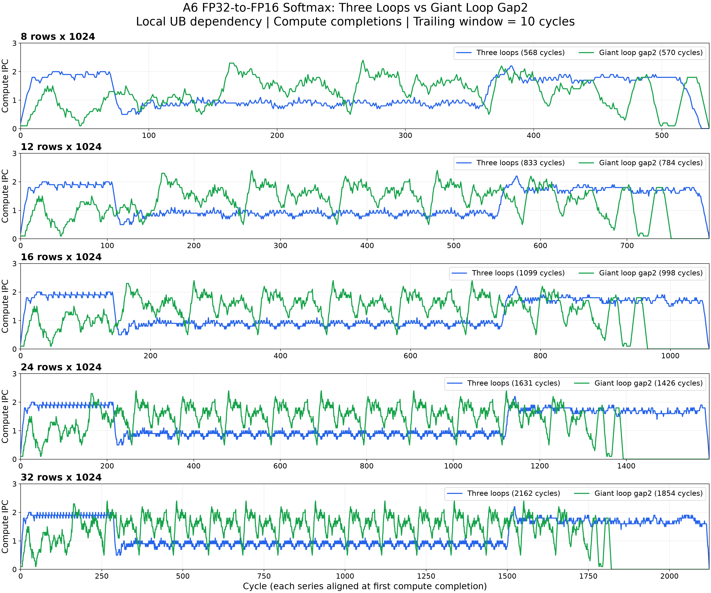

A6 / DV121 / dav-9201 · 历史 VfSim 局部 UB 地址依赖实验
Softmax 融合与多 Shape 结果汇总
固定 1024 列，对比三循环实现与 SUM→NORM 间隔两行的融合实现。输入与中间值为 FP32，输出为 FP16。
本页为历史模型预测，不是 A6 CAModel 实测。所有 shape 均启用局部 UB 地址依赖；本表不表示全局 membar 与局部同步的直接 A/B。此次仅整理材料，没有重新运行模型。
两行错位流水
三循环分别完成所有行的最大值、exp 与求和、归一化。融合版将不同行的三个阶段交错，以两个向量、128 个元素为一个处理单元；外层行循环不手动展开。
启动：MAX(0)
MAX(1) + SUM(0)
MAX(2) + SUM(1)
稳态：MAX(i) + SUM(i-1) + NORM(i-3)，i = 3 ... R-1
排空：SUM(R-1) + NORM(R-3)
NORM(R-2)
NORM(R-1)
同一行的 SUM 与 NORM 相隔两次外层迭代，为求和、除法和倒数准备留出时间。倒数由两个寄存器状态传递；中间 exp 仍写入 UB，再由 NORM 读取，相关访存由局部地址依赖保护。
输出链为 VMUL → VCVT(FP32→FP16) → VSTS(PK_B32)，没有独立 VPACK。这里是浮点精度转换，不是 INT8 量化。
8×1024 的历史一行间距版本为 776 cycles，两行间距为 570 cycles，减少 206 cycles（26.55%）；这是另外一组同 shape 调度对照，不是下面多 shape 表的基线。
多 Shape 周期与 UB 占用
| 输入 Shape | 三循环 | 两行错位融合 | 节省周期 | 周期降幅 | 加速比 | 三循环 UB | 融合 UB | 248 KiB 预算对照 |
|---|---|---|---|---|---|---|---|---|
| 8 × 1024 | 568 | 570 | -2 | -0.35% | 0.996× | 80.0625 | 80 | 名义占用低于预算 |
| 12 × 1024 | 833 | 784 | +49 | 5.88% | 1.062× | 120.0938 | 120 | 名义占用低于预算 |
| 16 × 1024 | 1099 | 998 | +101 | 9.19% | 1.101× | 160.1250 | 160 | 名义占用低于预算 |
| 24 × 1024 | 1631 | 1426 | +205 | 12.57% | 1.144× | 240.1875 | 240 | 名义占用低于预算 |
| 32 × 1024 | 2162 | 1854 | +308 | 14.25% | 1.166× | 320.2500 | 320 | 超预算；仅趋势 |
UB 为当前完整 buffer 布局的名义占用：输入 4RC bytes + exp 中间值 4RC bytes + FP16 输出 2RC bytes；三循环另有 8R bytes 统计量。它不含对齐预留、VF 栈等额外开销。
32 行版本仅用于吞吐趋势。完整 buffer 约 320 KiB，超过 248 KiB 预算；不能据此声称该版本可直接在硬件上执行。24 行版本约 240 KiB，也需要进一步验证实际布局和额外开销。
在 8→32 行区间，三循环平均每新增一行约增加 66.42 cycles，融合版约增加 53.50 cycles。更低的持续处理成本使融合收益随行数增长而显现；启动与排空成本的解释是趋势判断，未逐事件分离验证。

计算完成 IPC 对比
按 10-cycle trailing window 统计每周期计算指令完成数，不是所有指令的发射 IPC。每条曲线以自己的首次计算完成为零点；五个子图纵轴统一为 0～3，横轴各自取范围，单位均为 cycle。图例周期为完整 VF 时间。

验证范围与限制
- 不是 A6 硬件精度验证。五种 shape 没有运行 A6 CAModel，也没有可以用于计算周期预测精度的 A6 golden。
- 历史 8×1024 gap2 原版另做过 A5 CAModel 数值验证：8192 个 FP16 输出通过，最大相对误差约 0.04672%，A5 VF 时间 634 cycles。这不等于本次多 shape VF-only 源码逐项通过，更不能作为 A6 实测时间。
- 多 shape 已检查每行 16 条 VEXPDIF、16 条 VMUL、16 条 VCVT 和 1 条 VDIV，以及 FP16 输出起始地址完整无重复；这些是结构与地址覆盖检查，不是数值执行验证。
- 正式 DV121 配置保持 68 个物理向量寄存器、SHQ 深度 44，未为候选修改资源配置。历史 forwarding/II fallback 警告保留，当前参数补齐或模型变化后需重新预测。
- 最终 PK_B32 输出 store 的 span 当时仍为 unknown_span；该输出对象独立且没有后续 load。因此不能称为全部访存都精确建模，融合版精确范围覆盖率为 80%。
- 三循环预测移除两条全局 membar 并启用局部地址依赖；融合源码本身没有显式 membar。两者的指令数量和资源生命周期不同，不能把差异全部归因于同步方式。
- 本页只归档源码、预测摘要、模型警告和 IPC 证据，不伪造 A6 CAModel 日志，也不复制体积较大的逐周期调试历史。
各版本 CCE 与证据
| Shape / 版本 | 源码 | 结果 | 覆盖边界 |
|---|---|---|---|
| 8 × 1024 · 三循环 | CCE 源码 | 预测记录 | 参数与模型警告 |
| 8 × 1024 · 两行错位融合 | CCE 源码 | 预测记录 | 参数与模型警告 |
| 12 × 1024 · 三循环 | CCE 源码 | 预测记录 | 参数与模型警告 |
| 12 × 1024 · 两行错位融合 | CCE 源码 | 预测记录 | 参数与模型警告 |
| 16 × 1024 · 三循环 | CCE 源码 | 预测记录 | 参数与模型警告 |
| 16 × 1024 · 两行错位融合 | CCE 源码 | 预测记录 | 参数与模型警告 |
| 24 × 1024 · 三循环 | CCE 源码 | 预测记录 | 参数与模型警告 |
| 24 × 1024 · 两行错位融合 | CCE 源码 | 预测记录 | 参数与模型警告 |
| 32 × 1024 · 三循环 | CCE 源码 | 预测记录 | 参数与模型警告 |
| 32 × 1024 · 两行错位融合 | CCE 源码 | 预测记录 | 参数与模型警告 |
这些是历史 VF-only 源码快照，不是包含 host、UB 分配和编译运行环境的硬件完整用例。文件名 kernel.cce 仅统一归档命名，源码字节未修改。